在《天能》於全球上映之際，立即掀起國際影評圈的哀鴻片野，自然也引起影迷好奇，這部片究竟多難懂？或許，諾蘭真能拯救今年慘淡的電影產業。然而，在網路影音串流已成為主流的今日，傳統電影市場受到衝擊，使得近年許多電影從業人員陷入困境。自最初嶄露頭角，諾蘭便不斷提倡採用傳統拍攝手法的重要性，而他過去的所有電影作品，均是為了大銀幕量身打造。
透過本文稍微介紹，諾蘭何以成為今日大眾口中的「諾神」，而在數位影像掛帥的今日，他為何仍堅持以底片拍攝電影？
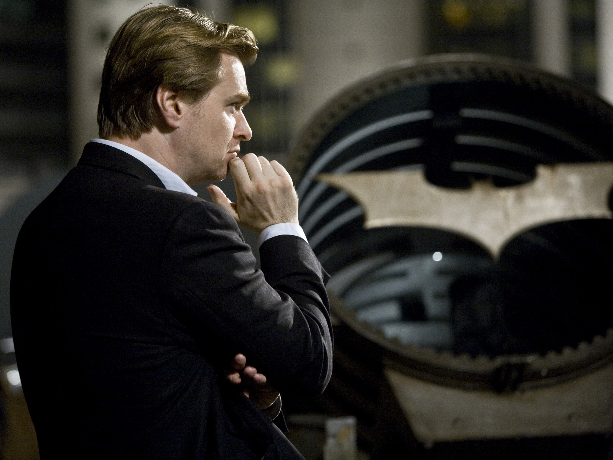01. 成長背景
諾蘭對電影的熱愛渾然天成，英國父親是廣告業的創意總監，美國母親則是英語老師，外媒曾寫道家人對於他選擇投身電影相當支持，自小便拿著父親的 Super 8 相機拍攝 Stop Motion（定格動畫）影片，自此便從未停止拍攝製作電影。
大學主修英國文學，沒上過任何攝影學校，之所以會選擇唸倫敦大學學院（UCL），也是為了加入學校裡的電影協會（類似電影社團的概念），利用當時的學校設備，用自己的錢拍了第一部短片，每次拍個 15 分鐘左右，也在這時候認識了自己的妻子 Emma Thomas（也是今日諾蘭所有電影的製作人）。
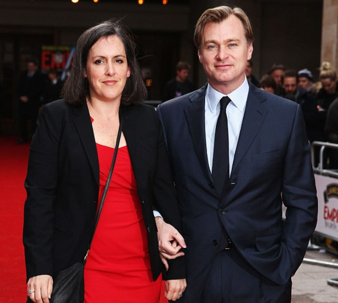自學電影成才的諾蘭，在過往外媒報導中，記者問及自學攝影的好處為何？他回答：「以最原始的方式瞭解何謂攝影。」
「若不是出於純粹的好奇心，你不會學到太多東西。」
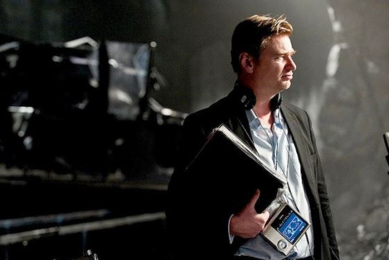02. 第一部劇情長片作品《跟蹤》，僅耗費 6000 美元
1998 年，諾蘭第一部劇情長片《跟蹤》（Following），便是在週末與友人、家人共同拍攝完成，耗費近一年的時間。關於拍攝過程，他在 2001 年受訪時曾說：「在電影《跟蹤》中，我都是用老式的 Arri BL 16mm 底片拍攝，而且都是手持，沒用任何螢幕輔助，我必須親自拍攝，才能知道自己拍到什麼。」
「我當時想出一個辦法，可以用自己的錢支付每個星期六的十分鐘拍攝費用，只拍一、兩個鏡頭，一年就累積了一定的鏡頭量，最終就能拍出 70 分鐘的電影。」
「當我在處理鏡頭時，我並沒有將它跟聲音同步，所以是在拍攝六個月後才將這些元素組合在一起，現在回想起來似乎有些瘋狂，可我不得不相信我的直覺。從長遠來看，這似乎是一個有用的方法，因為你必須考慮是否真的得到你想要的鏡頭。」
「在《記憶拼圖》中，我也做了同樣的事，不怎麼看影像檢視器（video monitor），我更喜歡集中精神在演員身上，從攝影機的側面看他們，很顯然今天的導演已經不這麼做了。」
「我也沒很常用耳機，因為我更喜歡聽現場的狀態。在耳機中，聲音被壓縮了，聲音聽起來會比你實際現場時聽到的更有活力，當你在現場聽不到這種聲音時，你會很失望。」
「我嘗試鼓勵初出茅廬的年輕人，重製他們以最小規模製作中經歷的一切，因為這就是所謂的電影製作。」
如果你想成為一名電影人，那就好好地拍一部電影，享受這種過程。別一直想著下一件事要做什麼。」
03. 啟蒙導演 —— 雷利史考特
《天能》實為 2020 年科幻諜戰電影代表之作，而早在 1980 年代初，雷利史考特被視為擁有最優秀的電影構建者之一，尤以《銀翼殺手》（Blade Runner）為該年代的科幻代表，諾蘭過去也多次重述導演雷利史考特對自身作品的影響，並強調他是科幻電影中最重要的導演之一。他曾說，自己從雷利史考特作品中得到最重要的東西，便是對微型模型和物理效果的巧妙運用手法。
當時是 CGI 仍未成為主流的時代，雷利史考特以這兩種手法呈現銀翼殺手中的未來科幻景觀，諾蘭更曾向 Forbes 說：「《銀翼殺手》是有史以來最成功的電影。」。
「我記得我被《銀翼殺手》打動，也注意到並分析了《異形》，兩部是截然不同的電影，不論是演員、故事等等，然而，背後的思想是一樣的，這就是我所關注的：導演的想法，它如何對電影的創作產生關鍵性的影響。」
「也因為這樣，我開始寫作，因為當你最初開始時，沒人會給你一個劇本然後就開始當導演。所以，我開始寫作，最初只純粹為了自己，能導演一些東西，後來也漸漸喜歡上寫作。」
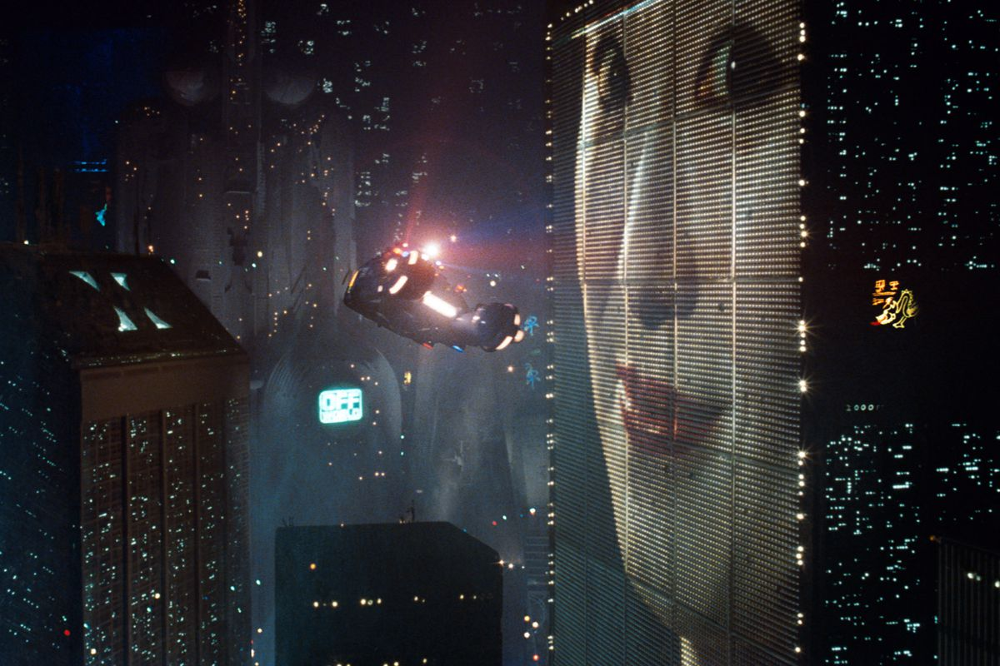
04. 啟蒙電影：《星際大戰》與《2001：太空漫遊》
在《The Hollywood Reporter》的專訪中，諾蘭曾表示最早啟發他創作的電影，其一為 1997 年版本喬治盧卡斯導演的《星際大戰》，另一部則為史丹利庫伯力克 《2001：太空漫遊》。
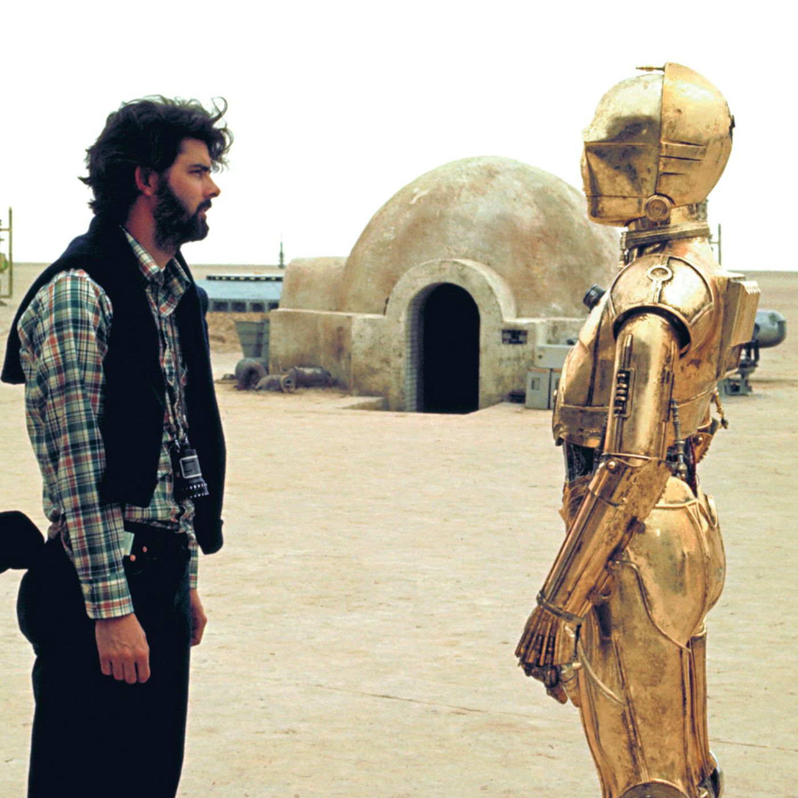
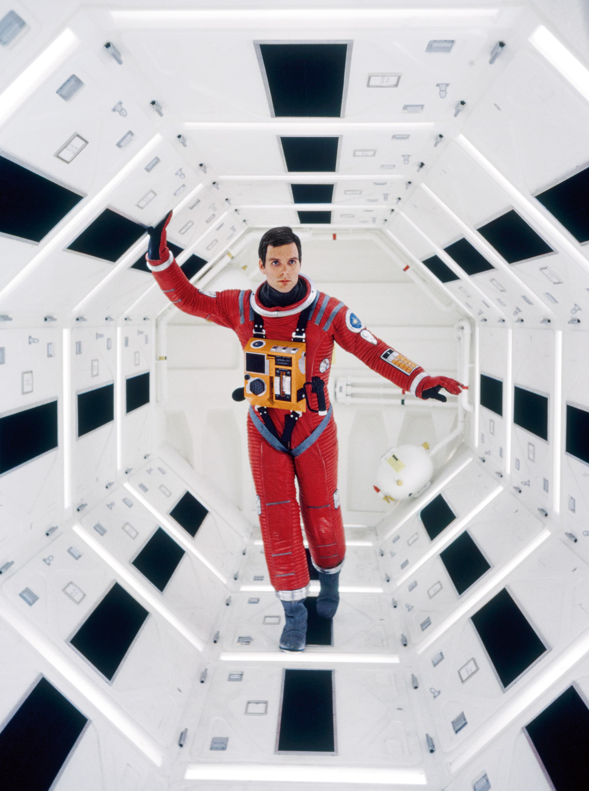
諾蘭說，當他第一次看《2001：太空漫遊》時，只有 7 歲，從哲學的角度看，不曉得這部電影究竟意味些什麼，卻被它簡單的規模與驚人的電影體驗所震撼，進而影響到他日後的創作手法。
「我從小就是他的影迷，對他搭建那個離心裝置，讓太空人能四處慢跑、倒立的方式很著迷，我覺得他幻想出的世界是完全令人信服且印象深刻的。所以我一直想做類似的事情。」
05. 所以，諾蘭的片場真的嚴禁出現椅子？
最初，這說法出自美國女星 Anne Hathaway 的 Variety 專訪，她提及諾蘭不喜歡在片場看到椅子，因為這會讓演員變得懶惰，她說：「他的理由是：『如果有椅子，人們會坐下，他們就不會認真工作。』」
「我是說，他製作了這些相當驚人的電影，不論是在規模、野心或是技術上都是，他總是能確保電影在預算內且如期完成，但他似乎真的跟『椅子』有過節。」
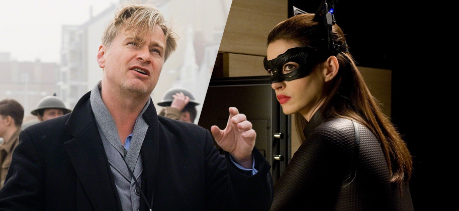
報導出現不久後，他的發言人 Kelly Bush Novak 向 Vanity Fair 澄清：「事實上，在諾蘭的片場被禁止的只有手機（而且不是每個人都會）跟抽菸（這倒是大家都乖乖遵守）。」
「Anne 說的椅子，是導演的椅子，而且被擺在影像監視器附近，是根據級別而不是根據實際需求分配的。諾蘭選擇不用他的椅子，可從未禁止在片場使用椅子。演員跟工作人員能隨時坐在他們需要的地方，並且經常這麼做。」
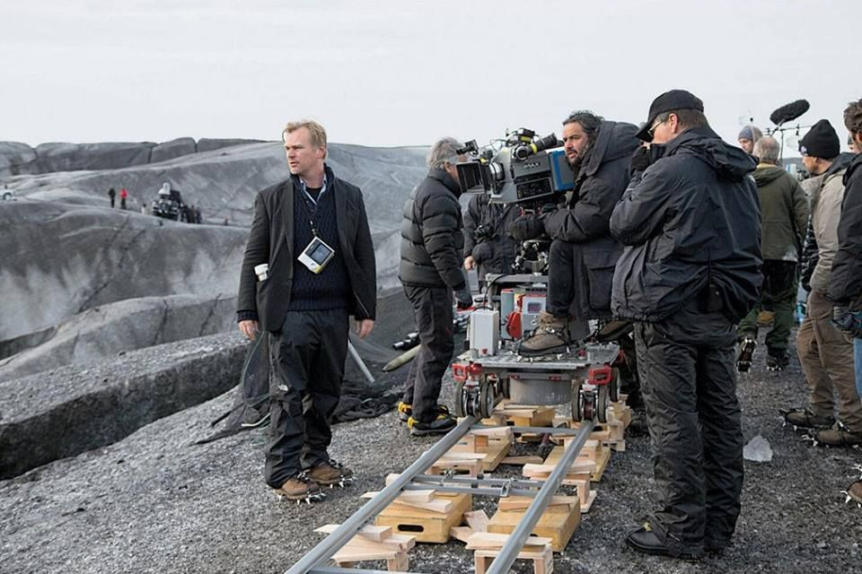
06. 據說，他沒有 email，也不用手機
諾蘭禁手機的原因其實相當單純，是為了保持現場的藝術氛圍，甚至以身作則，自己也拒絕用手機，他曾在 2015 年告訴 《The Hollywood Reporter》：「在紐約，你跟老鼠的距離不超過兩步，我覺得那是我跟手機的距離。」
「通常，劇組會有差不多 10 個人一起勘查，他們都有手機，當大家有需要的時候，其實跟我聯繫非常容易。」
「我很喜歡沒有手機，因為它讓我有時間去思考。你知道，當你有一台智慧型手機時，你如果有十分鐘的空檔，你會開始在上面看一些有的沒的。」
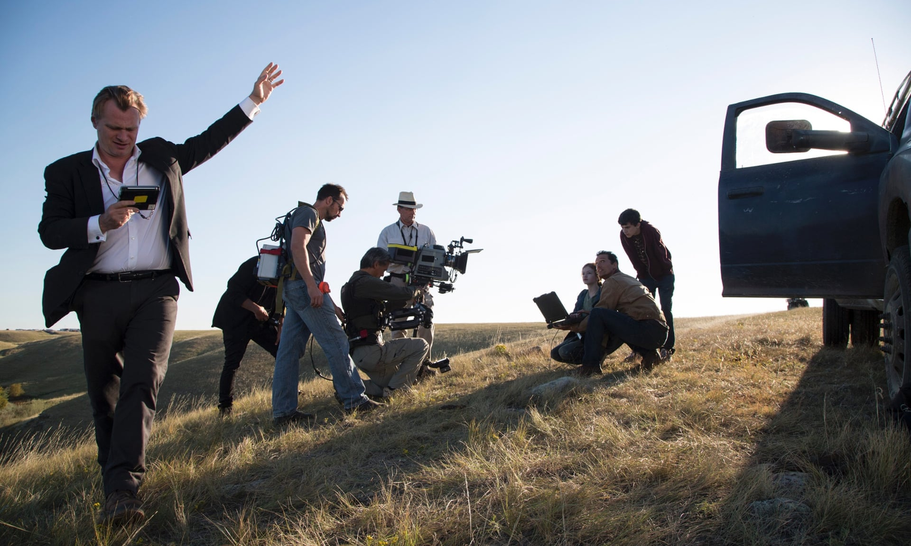
07. 比起數位，他更喜歡膠捲，只用單機拍攝，而且不相信 3D
諾蘭與攝影師 Ｗally Pfister 與 Steven Spielberg 等人為近日電影產業最後少數仍堅持以底片拍攝電影的人，過去接受 DGA 專訪時，他曾解釋這一切背後的目的：「過去十年裡，有越來越大的壓力要求我停止拍攝底片，開始拍攝數位影片，可我不懂為什麼要這樣。」
對我來說，底片工作成本更低，成像品質更好，技術已經被人們認識與理解有一百年，相當可靠。」
「事實上，我認為這歸根究底是片商與產業裡的厲害關係，透過改變而不是維持現狀來賺更多錢。」
「我認為 IMAX 是有史以來發明出最棒的電影格式，我想說的是，沒人要搶走任何一個人的工作，如果有人在為大製片廠做電影工作，有資源和權力堅持使用底片，那他們就應該說出來。如果我什麼都不說，然後就開始失去這個選擇，那就太可惜了。」
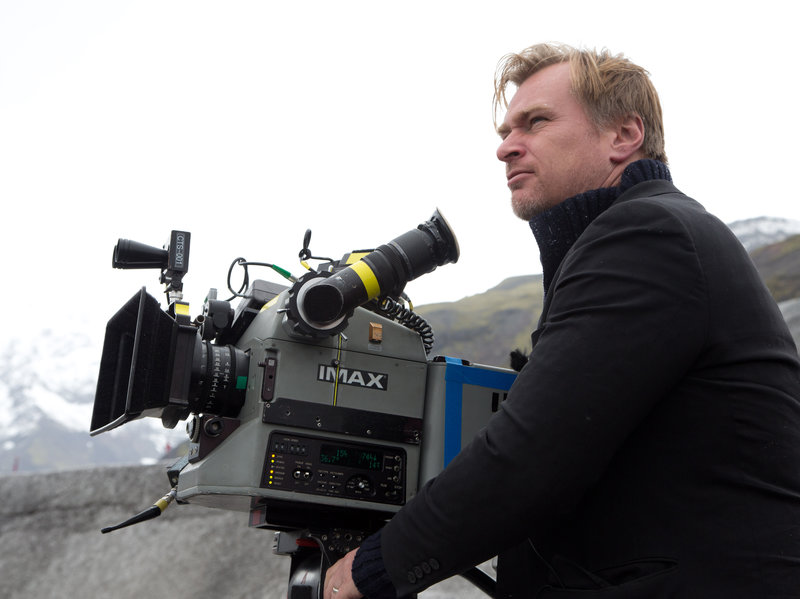
08. 所以，為什麼諾蘭在片場都穿西裝？
在與 DGA 專訪的尾聲，訪問者提及，今日電影業界多數人士開始拍攝工作時均穿著輕鬆，如諾蘭的同行原則上都穿著休閒服戴棒球帽上班，他自己往往著一身深色西裝或是亞麻外套，到底為何要穿得如此講究？

他說：「（笑）我以前上的是寄宿學校，在那裡我們必須穿制服，我已經習慣把外套裡所有口袋都用上，這是我最自在的樣子。」
「我不喜歡想著要穿什麼，所以我每天都穿同樣的衣服。」
「當我剛開始剛劇組一起拍攝《記憶拼圖》時，我記得當時我想搬一個沙袋，每個人都叫我不允許這麼做，因為有特定的人負責這項工作。我很想弄髒我的雙手，但通常沒機會這樣做，所以我會穿得好像一整天都待在辦公室一樣。這樣更容易些。」
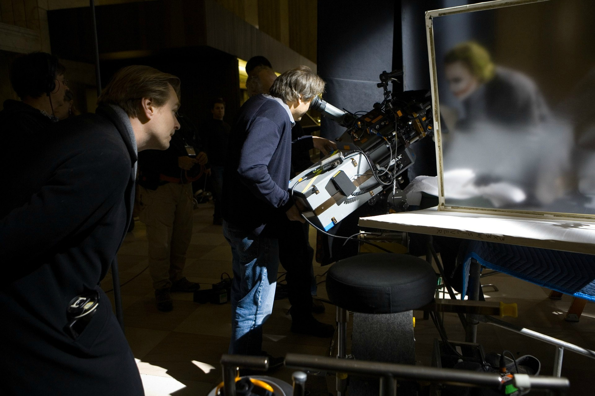
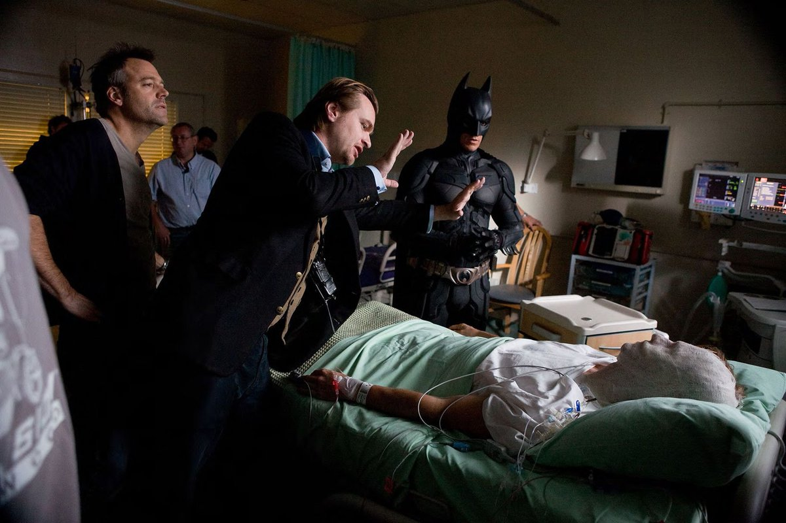
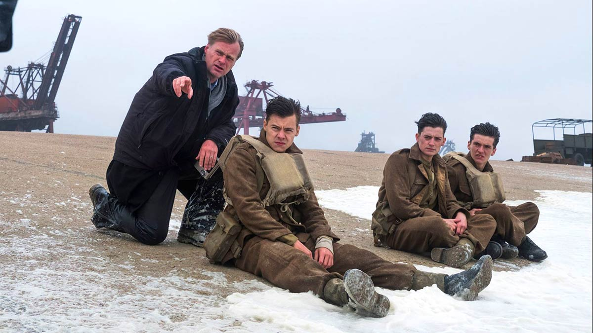